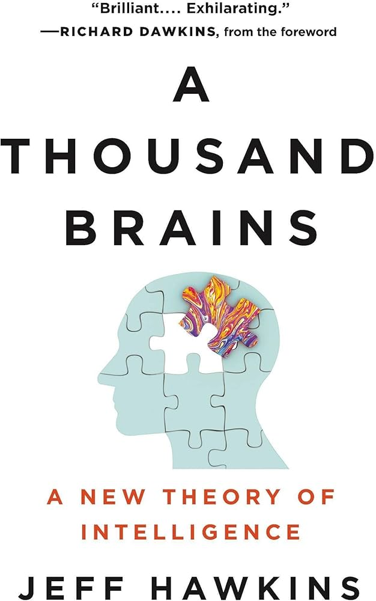

Notebook
Check out my Thoughts
📖Book
🧠Neuroscience
Theory of A Thousand Brains by Jeff Hawkins
I very much enjoyed this book. The introduction about how the brain systemically works gave me some insight into how my own brain works and how to optimize and understand it. This book allowed me to have a wonderful inner dialogue with myself and question some of my long term beliefs on why I do certain actions (like eating sugar). I love how the author jumps into the fire in the second half of the book and tackles some of the most controversial topics like gene editing, religion, and human greed.
Rating 🌟: 10/10
View My Thoughts📖Book
🔋Energy, Infrastructure, Society
Theory of A Thousand Brains by Jeff Hawkins
I very much enjoyed this book. The introduction about how the brain systemically works gave me some insight into how my own brain works and how to optimize and understand it. This book allowed me to have a wonderful inner dialogue with myself and question some of my long term beliefs on why I do certain actions (like eating sugar). I love how the author jumps into the fire in the second half of the book and tackles some of the most controversial topics like gene editing, religion, and human greed.